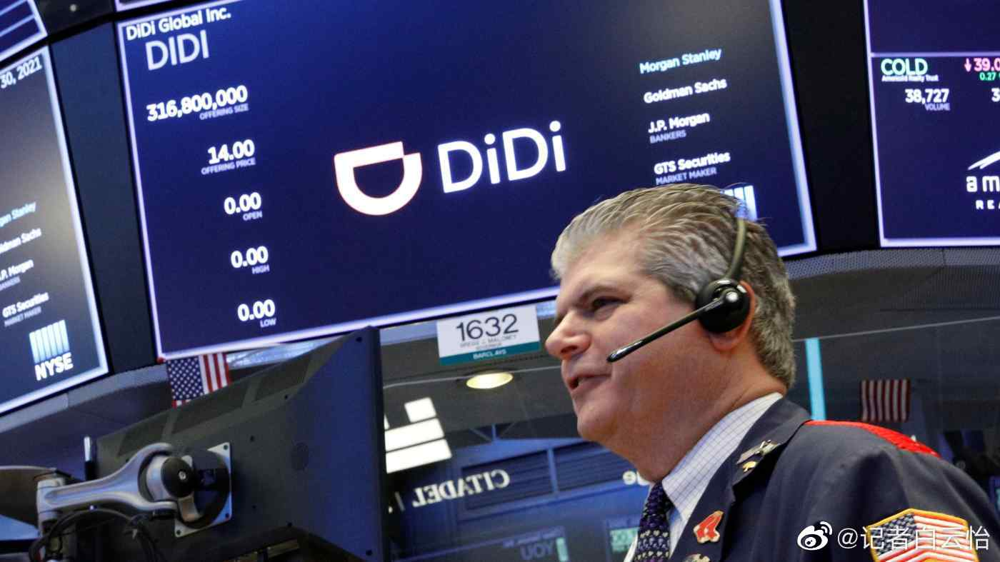

这个报道，让我想去看看斯巴达，希腊，罗马历史了//@楚团长瞎扯淡:两个民族的精神状态是不同的
@记者白云怡:
#v光计划# 怎么理解中国近期对多家大型企业/行业的监管措施？长期为彭博社供稿的独立经济学评论作者Noah Smith写了一篇分析，有一些有意思的观点。全文很长，所以我摘取了部分重点内容翻译如下：
关注商业新闻的人可能注意到一个有趣而奇怪的现象：在过去几个月中，中国正对自己的互联网公司重拳出击。对于许多置身于中国之外的人来说，很看清楚到底发生了什么。有观察人士认为，这是一场“反垄断运动”，正如美国和欧盟正在进行的一样——美国新反垄断运动背后的驱动力之一，是为了遏制这些大型科技公司的政治权力。
然而，中国的行动有一个重大差异：美国曾打击过几家公司巨头——微软、AT&T、标准石油等——但它最终并没有使这些公司所属的行业受到重创。我们也不太可能看到美国政府同时针对所有美国互联网公司的行动。
相比而言，中国的行动覆盖的面似乎要更广——看起来，它的对象不仅仅是那些最大的互联网公司，还有整个行业。（这里的一个重要证据是，中国似乎也在减少在该领域的风险投资。如果仅希望有更多竞争，就不会压制新的进入者。）
这非常奇怪，因为这么多年来，西方媒体的传统观点是，拥有一个“科技”行业对创新和增长都非常重要。尽管很多美国专家一度认为，中国很难建立起世界级的互联网科技行业，但无论如何，中国后来确实做到了，那么，为什么它现在会故意地打击这个它自己建立起的行业呢？
值得注意的是：中国最近的举措并未针对所有科技企业——华为仍然得到政府的全力支持；中国政府正在全力以赴，试图创建一个世界级的半导体行业，并为此投入巨额资金；中国同样继续在人工智能领域投入巨资——可以看出，中国“打击”的不是科技，而是被美国人贴上“科技”标签的、实质上是面向消费的互联网软件公司。
为什么美国人把“科技”等同于谷歌、亚马逊和脸书这样的公司？一个原因是，消费互联网行业是美国真正擅长的领域——与电子硬件行业不同，消费软件是亚洲竞争对手尚未能击败美国的领域。
另一个原因是，软件公司利润丰厚：2020年，脸书的利润超过180亿美元，是思科的6倍，霍尼韦尔的3倍。而由于美国常常倾向于将利润等同于价值，所以也就认为，面向消费的软件行业是美国的行业冠军，并为国家创造了巨大的经济价值。
然而，中国可能对此有不同的看法。中国政府可能认为，互联网巨头的利润更多来自租金，而不是实际增值——他们只是蹲在非生产性的“数字土地”上，利用先发优势来获取强大的网络效应。
事实上，我也对“把消费互联网技术认定为最高形式的技术”这样一种观点感到很奇怪，因为我不认为脸书、Snap等应用程序在“技术推动文明”方面做了最重要的工作。反之，它们可能在这方面还产生了一些负面影响：比如，它们开发的应用程序提供了有趣的、但拖累生产力的干扰；这些公司把原本可能投身于材料科学或半导体制造的聪明孩子吸引到了广告优化和游戏开发领域。
大量玩游戏、在互联网上购买家庭用品、订购食品外卖，并不能让一个国家成为技术或科学领域的领导者——这些当然都是优秀的公司，但在我看来，我们技术文明的“里程碑”应当建立在科学和工业成就中。
在过去几个月中，中国高层很明显已经转向这样一种观点：硬技术（hard tech）比那些让我们更深入数字世界的产品更有价值。换句话说，中国对互联网行业的监管是其国家新兴产业政策的一部分，他们试图引导国家的工业结构，朝着他们认为能为整个国家服务的方向发展。
什么是能为整个国家服务的东西？我猜测是，地缘政治和军事力量，尤其是相对于其他对手国家的力量。
现在的美国人很容易忘记这一点：曾经，“有赢得战争的能力”也是我们技术创新的驱动目标，国防支出在传统上一直是美国政府科研支出的一个巨大组成部分，而在某种程度上，许多美国最成功的私营科技行业是这些国防努力的“副产品”。
但冷战之后，美国的优先事项从“生存”（survival）转向了“享受”（enjoyment）。像脸书和亚马逊这样的技术，从根本上来讲，就是休闲和消费，但它们从一个“有趣、有利可图的副产品”逐渐变成了的美国人心中的“技术中心”。
然而，中国从未真正从“生存”模式中走出过。是的，中国欢迎经济增长，不过这种增长总是朝着综合国力的目标前进。中国年轻人可能越来越倾向于套现、享受一些乐趣了，但中国高层并不是这样，他们有更重要的事情去做：一血之前的“百年屈辱”，或者为中国要求一个更合理的国际地位等等。
关注商业新闻的人可能注意到一个有趣而奇怪的现象：在过去几个月中，中国正对自己的互联网公司重拳出击。对于许多置身于中国之外的人来说，很看清楚到底发生了什么。有观察人士认为，这是一场“反垄断运动”，正如美国和欧盟正在进行的一样——美国新反垄断运动背后的驱动力之一，是为了遏制这些大型科技公司的政治权力。
然而，中国的行动有一个重大差异：美国曾打击过几家公司巨头——微软、AT&T、标准石油等——但它最终并没有使这些公司所属的行业受到重创。我们也不太可能看到美国政府同时针对所有美国互联网公司的行动。
相比而言，中国的行动覆盖的面似乎要更广——看起来，它的对象不仅仅是那些最大的互联网公司，还有整个行业。（这里的一个重要证据是，中国似乎也在减少在该领域的风险投资。如果仅希望有更多竞争，就不会压制新的进入者。）
这非常奇怪，因为这么多年来，西方媒体的传统观点是，拥有一个“科技”行业对创新和增长都非常重要。尽管很多美国专家一度认为，中国很难建立起世界级的互联网科技行业，但无论如何，中国后来确实做到了，那么，为什么它现在会故意地打击这个它自己建立起的行业呢？
值得注意的是：中国最近的举措并未针对所有科技企业——华为仍然得到政府的全力支持；中国政府正在全力以赴，试图创建一个世界级的半导体行业，并为此投入巨额资金；中国同样继续在人工智能领域投入巨资——可以看出，中国“打击”的不是科技，而是被美国人贴上“科技”标签的、实质上是面向消费的互联网软件公司。
为什么美国人把“科技”等同于谷歌、亚马逊和脸书这样的公司？一个原因是，消费互联网行业是美国真正擅长的领域——与电子硬件行业不同，消费软件是亚洲竞争对手尚未能击败美国的领域。
另一个原因是，软件公司利润丰厚：2020年，脸书的利润超过180亿美元，是思科的6倍，霍尼韦尔的3倍。而由于美国常常倾向于将利润等同于价值，所以也就认为，面向消费的软件行业是美国的行业冠军，并为国家创造了巨大的经济价值。
然而，中国可能对此有不同的看法。中国政府可能认为，互联网巨头的利润更多来自租金，而不是实际增值——他们只是蹲在非生产性的“数字土地”上，利用先发优势来获取强大的网络效应。
事实上，我也对“把消费互联网技术认定为最高形式的技术”这样一种观点感到很奇怪，因为我不认为脸书、Snap等应用程序在“技术推动文明”方面做了最重要的工作。反之，它们可能在这方面还产生了一些负面影响：比如，它们开发的应用程序提供了有趣的、但拖累生产力的干扰；这些公司把原本可能投身于材料科学或半导体制造的聪明孩子吸引到了广告优化和游戏开发领域。
大量玩游戏、在互联网上购买家庭用品、订购食品外卖，并不能让一个国家成为技术或科学领域的领导者——这些当然都是优秀的公司，但在我看来，我们技术文明的“里程碑”应当建立在科学和工业成就中。
在过去几个月中，中国高层很明显已经转向这样一种观点：硬技术（hard tech）比那些让我们更深入数字世界的产品更有价值。换句话说，中国对互联网行业的监管是其国家新兴产业政策的一部分，他们试图引导国家的工业结构，朝着他们认为能为整个国家服务的方向发展。
什么是能为整个国家服务的东西？我猜测是，地缘政治和军事力量，尤其是相对于其他对手国家的力量。
现在的美国人很容易忘记这一点：曾经，“有赢得战争的能力”也是我们技术创新的驱动目标，国防支出在传统上一直是美国政府科研支出的一个巨大组成部分，而在某种程度上，许多美国最成功的私营科技行业是这些国防努力的“副产品”。
但冷战之后，美国的优先事项从“生存”（survival）转向了“享受”（enjoyment）。像脸书和亚马逊这样的技术，从根本上来讲，就是休闲和消费，但它们从一个“有趣、有利可图的副产品”逐渐变成了的美国人心中的“技术中心”。
然而，中国从未真正从“生存”模式中走出过。是的，中国欢迎经济增长，不过这种增长总是朝着综合国力的目标前进。中国年轻人可能越来越倾向于套现、享受一些乐趣了，但中国高层并不是这样，他们有更重要的事情去做：一血之前的“百年屈辱”，或者为中国要求一个更合理的国际地位等等。
- 